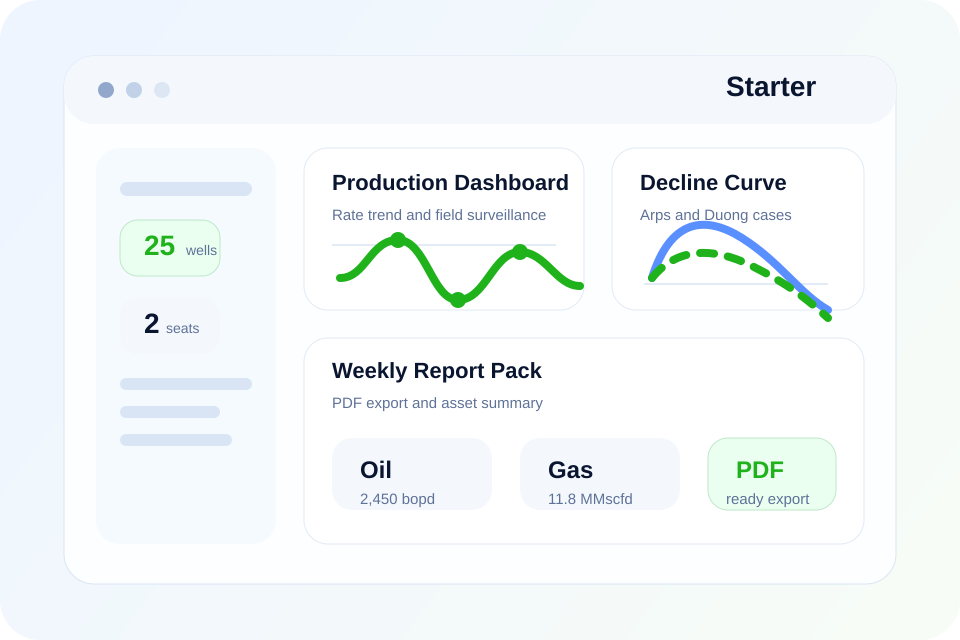

One surveillance queue
Keep rates, pressures, downtime, alarms and notes in one shared place instead of splitting them across multiple spreadsheets.
System Overview
PetroSphere gives production teams one operational workspace to monitor wells, flag exceptions, review rate and pressure changes and organize the next action instead of spreading surveillance work across disconnected spreadsheets and ad hoc reports.

Benefits
Keep rates, pressures, downtime, alarms and notes in one shared place instead of splitting them across multiple spreadsheets.
Spot underperforming wells earlier with live thresholds, baseline comparisons and recent-event context.
Generate recurring operational summaries with consistent data, less manual formatting and fewer copy-paste errors.
Prepare clean inputs for nodal, lift or intervention reviews by organizing the production story before detailed analysis starts.
Characteristics
The goal is to make surveillance repeatable and visible, not dependent on one engineer's personal workbook.
This makes the system useful both for daily production teams and for managers who need a cleaner operating picture.
Included Workflows
How Teams Use It
Open the dashboard, see changing wells, prioritize alerts and identify which assets need attention first.
Open the well detail view, compare recent history, check events, pressure context and benchmark behavior.
Record the next step, export the summary or move the well into a deeper nodal or intervention review.
Next Step
Start with the demo if you want to feel the interface, or go straight to pricing if you already know your team needs a production workflow product.
For most active assets, the Pro plan is the best starting point because it combines surveillance, nodal and reserve workflows in the same environment.